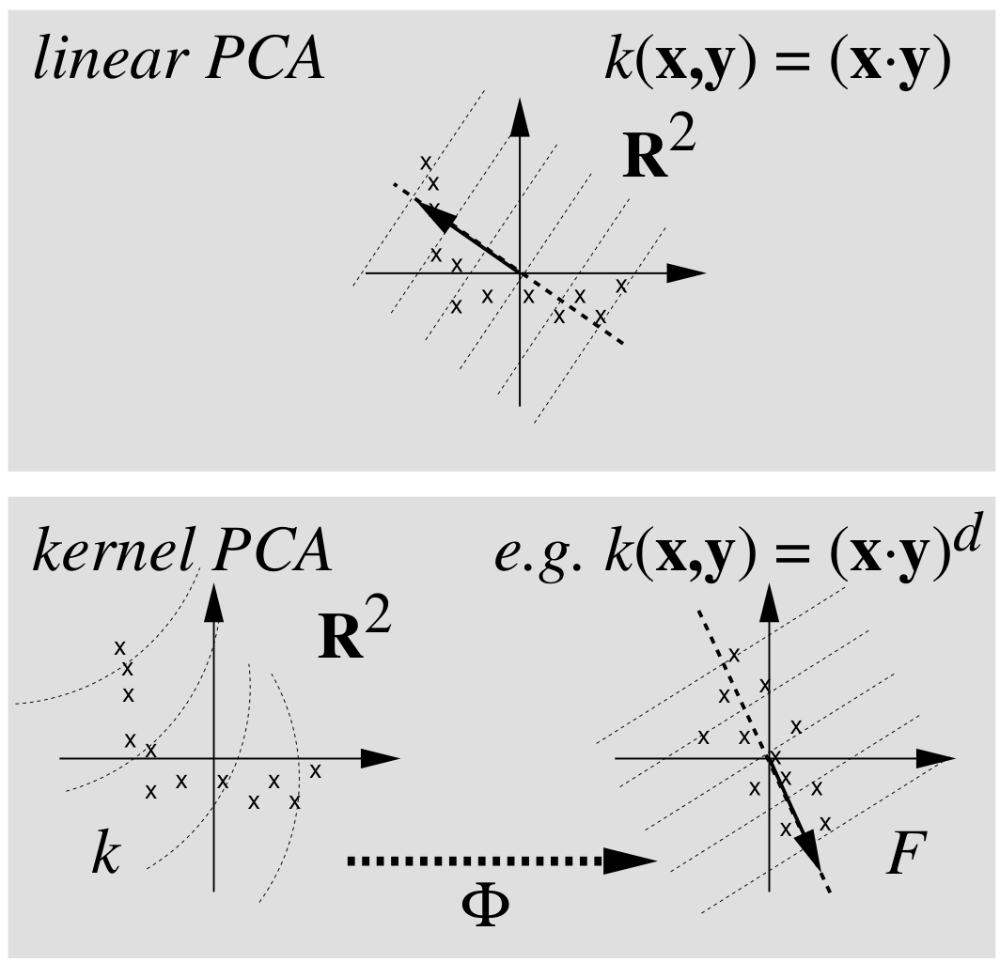

写在前面
介绍核主成分分析算法(Kernel Principal Component Analysis)
主成分分析
给定N个样本xi∈Rp，假设∑ixi=0，样本的协方差矩阵为Σ=N1∑ixixiT∈Rp×p，对其作特征值分解：
Σ=UΛUT=k∑λkukukT,UUT=Ip
得到降维投影映射yi=UkTxi，其中Uk∈Rp×k为前k个特征列向量构成的子矩阵，显然
N1i∑yiyiT=N1i∑UkTxixiTUk=UkTΣUk=UkTUΛUTUkT=Λk
其中Λk∈Rk×k为前k个最大的特征值构成的对角矩阵。记样本矩阵X=[x1,x2,…,xN]∈Rp×N，以上问题可以用如下优化问题来概述
UkUkT=Ikmini∑∥xi−Pk(xi)∥2=mintr(X−Pk(X))T(X−Pk(X))=mintr(XT(I−Pk)T(I−Pk)Y)=mintr(XXT(I−Pk)2)=mintr(XXT(I−Pk))=mintr(XXT)−tr(XXTUkUkT)=maxtr(UkTXXTUk)=maxtr(UkTΣUk)=maxtr(Σk)=i=1∑kλk
其中Pk=UkUkT是到子空间的投影映射。此时Uk的最优解为前k个特征向量构成的列酉阵。
线性到非线性

核主成分分析
向量内积⟨a,b⟩=aTb，求解协方差矩阵的特征方程
λu=Σu=(N1i∑xixiT)u=N1i∑⟨xi,u⟩xi
λ⟨xi,u⟩=⟨xi,Σu⟩
u=i∑λN⟨xi,u⟩xi=i∑αixi
引入非线性映射Φ:Rp→F,x↦X，假设∑iΦ(xi)=0成立，否则可进行中心化处理Φ(xi)=Φ(xi)−N1∑jΦ(xj)。对应协方差矩阵为
Σˉ=N1i∑Φ(xi)Φ(xi)T
对应特征值方程为λU=ΣˉU，表明特征向量位于Φ(x1),⋯,Φ(xN)所张成的空间内，可得以下两个结论：
λ⟨Φ(xi),U⟩=⟨Φ(xi),ΣˉU⟩
U=j∑αjΦ(xj)
可得
λj∑αj⟨Φ(xi),Φ(xj)⟩=N1j,k∑αj⟨Φ(xi),Φ(xk)⟩⟨Φ(xk),Φ(xj)⟩
令Kij=⟨Φ(xi),Φ(xj)⟩,λ~=Nλ，
Kα=λ~α
由于特征向量的单位化，即UTU=1，可得
i,j∑αiαj⟨Φ(xi),Φ(xj)⟩=αTKα=λ~αTα=1
对于新的样本点t，特征空间对应点Φ(t)的投影可表示为
⟨U,Φ(t)⟩=j∑αj⟨Φ(xj),Φ(t)⟩=j∑αjK(xj,t)
计算步骤
- 计算矩阵K
- 计算特征向量并归一化
- 计算新的样本点对应的特征向量
核函数
不同核函数具有不同的意义，后面会专门写一个核方法、核技巧的总结。
Kernel PCA性质(继承于PCA)
- 前q个主成分比其他任意q个主成分表示的方差是最大的
- 前q个主成分比其他任意q个主成分表示的均方误差是最小的
- 主成分具有无关性
- 前q个主成分比其他任意q个主成分表示的互信息最多
参考文献